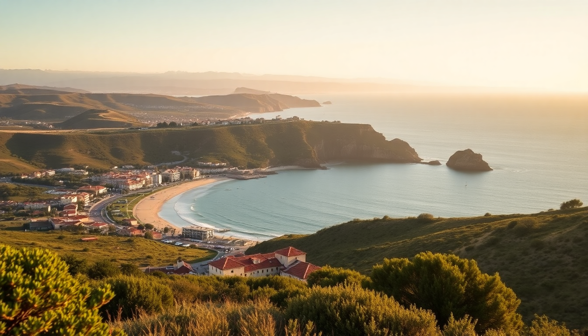

Where to Stay in the Algarve: Best Towns for Every Budget

I’ve spent the last three winters hopping between Algarve towns, trying to figure out which one actually fits different budgets—not just the Instagram version. Here’s what I found: each of these four towns has a distinct vibe and a real price range, and picking the wrong one can kill your trip.
Which Algarve town is best for budget travelers?
Tavira is the quiet winner for anyone watching euros. It’s got the least touristy old town, a real working train station, and plenty of affordable guesthouses. I stayed at Residencial Mares for €45 a night in June—basic but clean, with a rooftop terrace overlooking the Gilão River. The Tavira Market has cheap, fresh produce if you’re self-catering, and the Ilha de Tavira ferry is only €2.50 return. Downside: not much nightlife, so if you want bars past midnight, look elsewhere.
- Residencial Mares — budget guesthouse, river views, under €50/night
- Tavira Market — cheap groceries and local seafood
- Ilha de Tavira ferry — €2.50 return to the beach
- Pensão Agostinho — another solid budget pick, €40–€55
Where should mid-range travelers stay in the Algarve?
Lagos gives you the best balance of quality and price for mid-range budgets. We booked Hotel Marina Rio for €110 a night in shoulder season (May)—rooms were spacious, breakfast included, and the pool overlooks the marina. The old town is walkable, with real restaurants like Tasca do Kiko (grilled octopus for €14) and Casinha do Petisco (tiny, book ahead). The Ponta da Piedade cliffs are a 20-minute walk or €5 Uber. You’re paying a premium over Tavira, but you get better beaches and actual nightlife.
- Hotel Marina Rio — mid-range, marina view, great breakfast
- Tasca do Kiko — local grilled fish, €12–€16 mains
- Casinha do Petisco — small, reservation-only, excellent seafood
- Ponta da Piedade — free cliff walks and grotto boat tours
Is Albufeira worth the money for luxury travelers?
Albufeira is the most expensive of the four, but only if you stay in the right spots. The old town (Albufeira Velha) is overpriced and crowded—I’d skip it. Instead, head to Praia da Oura or São Rafael for quieter beaches. We spent two nights at EPIC SANA Algarve (€250/night in August) and it was worth it: private beach access, huge pools, and the best breakfast buffet I’ve had in Portugal. If that’s too steep, Hotel Califórnia in the old town runs €90–€130 and is decent. Avoid the strip clubs near The Strip—they’re tourist traps with inflated drink prices.
- EPIC SANA Algarve — luxury resort, private beach, €200–€300/night
- Hotel Califórnia — solid mid-range option in old town
- Praia da Oura — good beach, less crowded than old town
- The Strip — avoid for overpriced drinks and noise
Which town is best for a family vacation in the Algarve?
Faro works well for families who want convenience over beachfront glamour. The Faro Airport is a 10-minute drive, and the Faro Train Station connects to Lisbon in 2.5 hours. We stayed at Hotel Faro & Beach Club (€80/night in April) with a pool and a short walk to the marina. The Ria Formosa Natural Park is perfect for a half-day boat trip to see flamingos—kids loved it. Beaches here require a ferry or bridge (like Ilha de Faro), so it’s not walkable from the center. But the old town is quiet, safe, and has good family-run restaurants like O Celeiro (€10 lunch plates).
- Hotel Faro & Beach Club — family-friendly, pool, near airport
- Ria Formosa Natural Park — boat tours, flamingos, €20/person
- Ilha de Faro — closest beach, ferry or bridge access
- O Celeiro — affordable family restaurant, €8–€12 mains
What’s the best town for nightlife and young travelers?
Albufeira wins for nightlife, but pick your area carefully. The Oura Strip is loud, drunk, and full of British stag parties—fun if you’re 20 and want cheap shots, but I’d avoid it after 11 PM. Albufeira Velha (old town) has better bars like Kiss Discotheque and Jardim dos Namorados with live music. A beer runs €3–€5. For accommodation, Muthu Clube Praia da Oura is a budget-friendly option at €70/night with a pool. If you want quieter nightlife, Lagos has a more laid-back scene around Praia da Batata with sunset drinks.
- Kiss Discotheque — old town, €5 entry, open till 4 AM
- Jardim dos Namorados — live music, €4 beers
- Muthu Clube Praia da Oura — budget hotel, pool, €60–€80/night
- Praia da Batata (Lagos) — sunset bar scene, less rowdy
FAQ
Is it better to stay in Faro or Lagos for a first visit? Lagos is better for a first visit if you want beaches, nightlife, and walkability. Faro is better if you’re flying in and out quickly or using it as a base to explore the eastern Algarve. Lagos has more character and better dining options for the same price.
Can I visit all four towns without a car? Yes. The Algarve train line runs from Lagos to Faro to Tavira, with Albufeira served by a station 5 km from the old town (take a shuttle or Uber). Trains are reliable and cheap—Lagos to Faro is €6.50 and takes about 1.5 hours. Buses fill in gaps.
What’s the cheapest time to visit the Algarve? November through March prices drop by 40–50%. I stayed in a 4-star hotel in Tavira for €55/night in January. Weather is mild (15–18°C), but some restaurants and boat tours close. April and October are the sweet spot for good weather and lowish prices.
Conclusion
- Budget travelers should head to Tavira for cheap guesthouses and free beach access via ferry.
- Mid-range travelers get the best value in Lagos—good hotels, real restaurants, and walkable beaches.
- Luxury seekers should spend in Albufeira but stick to Praia da Oura or São Rafael areas.
- Families will appreciate Faro for its airport proximity, quiet old town, and Ria Formosa boat trips.
- Nightlife lovers go to Albufeira’s old town but skip the Strip for better bars.